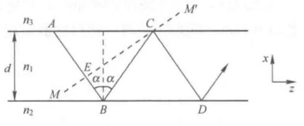
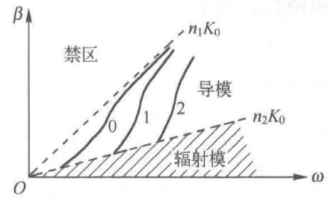

本章将介绍利用经典电磁理论分析薄膜波导的方法，与几何光学相比，电磁场理论不仅能提供更加详尽的光波信息，还引入了导模的概念.
理论证明，并非导波条件所限定的任何\(\beta\)值都能称为实际的传播常数，只有那些由特征方程所决定的特定的\(\beta\)值才能对应一定的光波传播方式，这种由特定参数所确定的特殊传播方式，称为光波导的导模.
为了不使严谨的数学推导脱离直观的概念，本节首先采用熟知的射线光学与波动光学干涉方法建立薄膜波导的特征方程.
[设]薄膜波导的芯层、衬底和覆盖层折射率分别为\(n_1, n_2, n_3\)，且\(n_1\gt n_2\geq n_3\)，芯层厚度为\(d\).

对三层介质，有：
传播常数为：
相等是由于切向方向的连续性.
以\(\kappa\)表示芯层波矢的\(x\)分量，则：
$$\kappa = |k_{1x}| = n_1k_0\cos\alpha$$均匀介质波导的锯齿形光线，在波动光学看来不过是大量平面波的叠加.
能够在薄膜波导中传输的光波，一定满足相干加强（谐振）条件，也就是说，这些平面波在它们共同的波面上，如MM'面，必须保持\(2\pi\)整数倍的相位差.
这里只是说需要具有相干性，而非发生了干涉.
考察图中斜向下的相邻平行光线在波面上的光程差，显然AB、CD两条光线在它们共同波面MM'上的光程差为：
因为这里的平面波表达式采取了\(e^{i(\omega t - \boldsymbol{k}\cdot\boldsymbol{r})}\)的形式，经过两次反射的光波在波面MM'上的相位要比其入射光波在MM'上的相位落后，因此由传播路程不同引起的相位差可以表示为：
$$\Phi_\Delta = -k_0\Delta = -2k_0n_1d\cos\alpha = -2\kappa d$$此外，对两光波相位差的计算，还要考虑由于其中一条光线在芯层与衬底及芯层与覆盖层两分界面上的全反射引起的相移\(2\Phi_{12}\)与\(2\Phi_{13}\).
因此，总相位差须满足如下相干加强条件：
$$-2\kappa d + 2\Phi_{12} + 2\Phi_{13} = -2m\pi$$ 均匀薄膜波导的特征方程（色散方程）总相位差需要满足如下相干增强条件：
$$\kappa d = m\pi + \Phi_{12} + \Phi_{13},\quad m\in\mathbb{N}$$方程中每一个满足波导条件的解，对应一种波导模式或电磁场模式，称为导模.
利用全反射相移公式，分别得到两种偏振态下的特征方程：
TE模 $$\begin{align} \kappa d &= m\pi + \arctan\frac{\sqrt{\sin^2\alpha - n_2^2/n_1^2}}{\cos\alpha} + \arctan\frac{\sqrt{\sin^2\alpha - n_3^2/n_1^2}}{\cos\alpha}\\ &= m\pi + \arctan\frac{\sqrt{\beta^2 - n_2^2K_0^2}}{\kappa} + \arctan\frac{\sqrt{\beta^2 - n_3^2K_0^2}}{\kappa} \end{align}$$ TM模 $$\begin{align} \kappa d &= m\pi + \arctan\frac{n_1^2}{n_2^2}\frac{\sqrt{\sin^2\alpha - n_2^2/n_1^2}}{\cos\alpha} + \arctan\frac{n_1^2}{n_3^2}\frac{\sqrt{\sin^2\alpha - n_3^2/n_1^2}}{\cos\alpha}\\ &= m\pi + \arctan\frac{n_1^2}{n_2^2}\frac{\sqrt{\beta^2 - n_2^2k_0^2}}{\kappa} + \arctan\frac{n_1^2}{n_2^2}\frac{\sqrt{\beta^2 - n_3^2k_0^2}}{\kappa} \end{align}$$其中\(m = 0,1,2,\cdots\)
当波导的条件参数\(d,n_1,n_2,n_3\)及波长\(\lambda\)确定后，可以求解出对应一定\(m\)值的\(\beta\)和\(\kappa\)，这些模参数可以决定一个光波模式的全部特性.
由于\(m\)是非负整数，是离散的，因此在导波条件下，\(\beta\)也是离散的.
所以导模是离散模，具有离散谱.
当光线在芯层与衬底（或覆盖层）分界面上不能实现全反射时，部分光将从芯层向衬底（或覆盖层）辐射出去，这种光波模式称为辐射模.
辐射模在芯层中不必满足谐振条件，只要其传播常数\(\beta\)满足\(0\leq \beta\leq n_2k_0\)，就是辐射模，所以辐射模的\(\beta\)在\([0,n_2k_0]\)范围内可以取连续值，辐射模谱为连续谱.
对某特定模式，其\(\beta\)随工作波长\(\lambda_0\)（或角频率\(\omega\)或波数\(k_0\)）变化，从而引起所谓的波导色散.
即使同一波长，波导模式不同，传播常数也不同，这会引起模式色散.
通过波导的\(\beta-\omega\)曲线示意图，可以分析波导的模式特性.

图中，三个离散模对应\(m = 0,1,2\)；
\(n_1k_0\)是最大可能的传播常数；
\(\beta\gt n_1k_0\)的区域为禁区，代表不存在模式的区域；
\(\beta\leq n_2k_0\)的区域为连续的辐射模区域.
由于几何光学的局限性，当波导的横向尺寸与光波长相当时，利用几何光学理论得到的结果，精度将极大降低，甚至无法得到正确结果.
光波导问题的严格分析应该是寻找满足光波导边界条件的电磁场方程的解，确定各模式的电磁场的横向分布和纵向传输特性.
无论对何种截面的波导，如薄膜波导、光纤、条形波导等，其中传输的任何导模、辐射模都是满足Maxwell方程组和边界条件的.
从Maxwell方程组出发，利用单色电磁波的基本方程：
$$\nabla\times\boldsymbol{E} = i\omega\mu_0\boldsymbol{H}$$ $$\nabla\times\boldsymbol{H} = -i\omega\epsilon\boldsymbol{H}$$直角坐标系下，写出如下单色光波的分量形式：
以下式子中的正负号翻转来源于时间相位因子的正负号不同（上取\(e^{-i\omega t}\)，下取\(e^{i\omega t}\)）
波导结构在\(y,z\)方向是无限的，假设电磁波沿\(z\)方向传播，因而波矢分量\(k_y = 0, k_z = \beta\)，场量与\(y\)无关.
由于受到上下界面的反射，芯层内必然形成两种方向的平面波，因此\(k_x\)有两种可能值，\(k_x^+ = \kappa, k_y^- = -\kappa\).
为简化方程，以双平面波的叠加为依据，构造一个形式解：
$$\begin{align} \boldsymbol{E} &= \boldsymbol{E}^+ e^{-i\boldsymbol{k}^+\cdot\boldsymbol{r}} + \boldsymbol{E}^- e^{-i\boldsymbol{k}^-\cdot\boldsymbol{r}}\\ &= (\boldsymbol{E}^+e^{-i\kappa x} + \boldsymbol{E}^-e^{i\kappa x})e^{-i\beta z} \end{align}$$本组方程只含\(E_y, H_x, H_z\)，其中\(E_y\)是唯一电场分量，且垂直于传播方向（横电场），因此该方程组描述的传播模式为横电模（TE模）.
本组方程仅含\(H_y, E_x, E_z\)，其中\(H_y\)为唯一磁场分量，且垂直于传播方向（横磁场），因此该方程组描述的传播模式为横磁模（TM模）
可以看出，上述两方程组是格各自独立互不关联的.
以上分析表明，薄膜波导存在两种不同偏振状态的传播模式，即TE模和TM模.
对以上两方程组分别进行变量代换可以得到单变量微分方程.
求得\(E_y\)则可推出其他分量：
$$H_x = -\frac{\beta}{\omega\mu}E_y$$ $$H_z = \frac{i}{\omega\mu}\frac{\partial E_y}{\partial x}$$求出\(H_y\)则可推出其他分量：
$$E_x = \frac{\beta}{\omega\epsilon}H_y$$ $$E_z = -\frac{i}{\omega\epsilon_0}\frac{1}{n^2}\frac{\partial H_y}{\partial x}$$依照导波条件，设：
对导模而言，两介质层中的场为倏逝波，\(k_{2x}\)与\(k_{3x}\)均为虚值.
\(\kappa, p, q, \beta\)均为场的特征常数：
\(\kappa\)：芯层中场在\(x\)方向的相位常数.
\(p\)：衬底中场沿\(x\)方向的衰减常数.
\(q\)：覆盖层中场沿\(x\)方向的衰减常数.
\(E_y\)完整形式的空间场分布为：
$$E_y = \begin{cases} Ce^{-q(x-a)}e^{-i\beta z}\quad(x\gt a)\\ A\cos(\kappa x + \phi)e^{-i\beta z}\quad(-a\lt x\lt a)\\ Be^{p(x+a)}e^{-i\beta z}\quad(x\lt -a) \end{cases}$$ 覆盖层（\(x\gt a\)） $$\frac{\mathrm{d}^2}{\mathrm{d}x^2}E_y - q^2E_y = 0$$ 芯层（\(-a\lt x\lt a\)） $$\frac{\mathrm{d}^2}{\mathrm{d}x^2}E_y + \kappa^2E_y = 0$$ 衬底（\(x\lt -a\)） $$\frac{\mathrm{d}^2}{\mathrm{d}x^2}E_y - p^2E_y = 0$$这里要令\(E_y = e^{rx}\)
\(H_y\)完整形式的空间场分布为：
$$H_y = \begin{cases} C'e^{-q(x-a)}e^{-i\beta z}\quad(x\gt a)\\ A'\cos(\kappa x + \phi)e^{-i\beta z}\quad(-a\lt x\lt a)\\ B'e^{p(x+a)}e^{-i\beta z}\quad(x\lt -a) \end{cases}$$